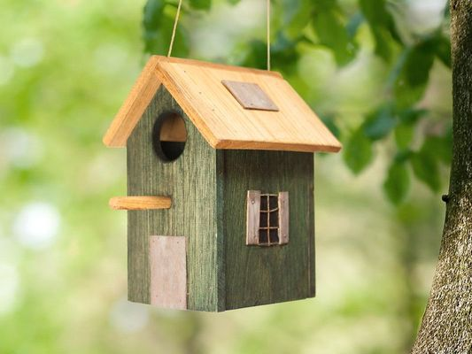

Todos sabemos que el verano es una época para estar con familia, ya que los niños no están en el colegio. Una forma divertida de entretenerlos será hacer comederos y casitas para los
pajaros del bosque. Tú podrás hacer la estructura y ellos decorarla de todas las maneras que se les ocurra.

¿Cómo hacer la casa de pajaros?
Hacer una casita para pajaros o simplemente un comedor es muy simple. Podrás utilizar los materiales que te proporciona el bosque o materiales reciclados que tengas por casa, pero recuerda que no sean contaminantes para el medio ambiente.